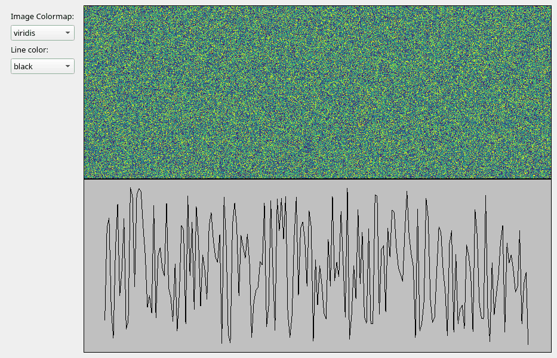

Note
Go to the end to download the full example code.
Update data using timer-based events#
Update VisPy visualizations from a QTimer in the main GUI thread.
Data Source#
The important part of this script compared to the previous examples is the
DataSource class. This class generates new image data in an event-based
workflow instead of a for or while loop. The events in this case are
generated by a QTimer in the main part of the script. The data generation being
event-based works well with Qt’s event loop to avoid blocking the main GUI
thread in basic cases (see below).
Note that this class sends the same numpy array instance every iteration to avoid creating unnecessary copies of the data. This should not cause issues with Qt or VisPy which will typically not modify data and will copy arrays if necessary.
The run_data_creation method includes a commented piece of code to sleep for
a small but significant amount of time. This is to demonstrate that this
Timer-based data generation will block the main GUI thread and affect user
experience if data generation is not fast. This may also occur if the data
generated is large. Examples of data generation that would not be well-suited
for this would be those that require contacting a remote resource
(database, website, instrument, etc) or a complex algorithm.
The run_data_creation uses a Qt signal to notify the VisPy Canvas wrapper
of new data with which to update the visualization. The function/method being
connected to the signal is called a “slot”. To make use of signals and slots
requires DataSource to be a subclass of QObject. This is also
needed if you plan on using the class with a QThread in the future.
Timer#
This script uses a QTimer object to trigger the data creation method every
N seconds (1.0 seconds by default). If the interval is set to “auto” the timer
will trigger as fast as possible.
Other Options#
If this script performs fast enough for your use case and on your users systems then using a QTimer may be the easiest option for generating realtime data for your visualization. If your workflow does not fit well into this structure then a threaded option is likely your best bet. See the other data source scripts in this section of the gallery for other examples.
import time # noqa
from math import sin, pi
import numpy as np
from PyQt5 import QtWidgets, QtCore
from vispy.scene import SceneCanvas, visuals
from vispy.app import use_app, Timer
IMAGE_SHAPE = (600, 800) # (height, width)
CANVAS_SIZE = (800, 600) # (width, height)
NUM_LINE_POINTS = 200
COLORMAP_CHOICES = ["viridis", "reds", "blues"]
LINE_COLOR_CHOICES = ["black", "red", "blue"]
class Controls(QtWidgets.QWidget):
def __init__(self, parent=None):
super().__init__(parent)
layout = QtWidgets.QVBoxLayout()
self.colormap_label = QtWidgets.QLabel("Image Colormap:")
layout.addWidget(self.colormap_label)
self.colormap_chooser = QtWidgets.QComboBox()
self.colormap_chooser.addItems(COLORMAP_CHOICES)
layout.addWidget(self.colormap_chooser)
self.line_color_label = QtWidgets.QLabel("Line color:")
layout.addWidget(self.line_color_label)
self.line_color_chooser = QtWidgets.QComboBox()
self.line_color_chooser.addItems(LINE_COLOR_CHOICES)
layout.addWidget(self.line_color_chooser)
layout.addStretch(1)
self.setLayout(layout)
class CanvasWrapper:
def __init__(self):
self.canvas = SceneCanvas(size=CANVAS_SIZE)
self.grid = self.canvas.central_widget.add_grid()
self.view_top = self.grid.add_view(0, 0, bgcolor='cyan')
image_data = _generate_random_image_data(IMAGE_SHAPE)
self.image = visuals.Image(
image_data,
texture_format="auto",
cmap=COLORMAP_CHOICES[0],
parent=self.view_top.scene,
)
self.view_top.camera = "panzoom"
self.view_top.camera.set_range(x=(0, IMAGE_SHAPE[1]), y=(0, IMAGE_SHAPE[0]), margin=0)
self.view_bot = self.grid.add_view(1, 0, bgcolor='#c0c0c0')
line_data = _generate_random_line_positions(NUM_LINE_POINTS)
self.line = visuals.Line(line_data, parent=self.view_bot.scene, color=LINE_COLOR_CHOICES[0])
self.view_bot.camera = "panzoom"
self.view_bot.camera.set_range(x=(0, NUM_LINE_POINTS), y=(0, 1))
def set_image_colormap(self, cmap_name: str):
print(f"Changing image colormap to {cmap_name}")
self.image.cmap = cmap_name
def set_line_color(self, color):
print(f"Changing line color to {color}")
self.line.set_data(color=color)
def update_data(self, new_data_dict):
print("Updating data...")
self.image.set_data(new_data_dict["image"])
self.line.set_data(new_data_dict["line"])
def _generate_random_image_data(shape, dtype=np.float32):
rng = np.random.default_rng()
data = rng.random(shape, dtype=dtype)
return data
def _generate_random_line_positions(num_points, dtype=np.float32):
rng = np.random.default_rng()
pos = np.empty((num_points, 2), dtype=np.float32)
pos[:, 0] = np.arange(num_points)
pos[:, 1] = rng.random((num_points,), dtype=dtype)
return pos
class MyMainWindow(QtWidgets.QMainWindow):
def __init__(self, canvas_wrapper: CanvasWrapper, *args, **kwargs):
super().__init__(*args, **kwargs)
central_widget = QtWidgets.QWidget()
main_layout = QtWidgets.QHBoxLayout()
self._controls = Controls()
main_layout.addWidget(self._controls)
self._canvas_wrapper = canvas_wrapper
main_layout.addWidget(self._canvas_wrapper.canvas.native)
central_widget.setLayout(main_layout)
self.setCentralWidget(central_widget)
self._connect_controls()
def _connect_controls(self):
self._controls.colormap_chooser.currentTextChanged.connect(self._canvas_wrapper.set_image_colormap)
self._controls.line_color_chooser.currentTextChanged.connect(self._canvas_wrapper.set_line_color)
class DataSource(QtCore.QObject):
"""Object representing a complex data producer."""
new_data = QtCore.pyqtSignal(dict)
def __init__(self, num_iterations=1000, parent=None):
super().__init__(parent)
self._count = 0
self._num_iters = num_iterations
self._image_data = _generate_random_image_data(IMAGE_SHAPE)
self._line_data = _generate_random_line_positions(NUM_LINE_POINTS)
def run_data_creation(self, timer_event):
if self._count >= self._num_iters:
return
# Uncomment to mimic a long-running computation
# time.sleep(3)
image_data = self._update_image_data(self._count)
line_data = self._update_line_data(self._count)
self._count += 1
data_dict = {
"image": image_data,
"line": line_data,
}
self.new_data.emit(data_dict)
def _update_image_data(self, count):
img_count = count % IMAGE_SHAPE[1]
self._image_data[:, img_count] = img_count / IMAGE_SHAPE[1]
rdata_shape = (IMAGE_SHAPE[0], IMAGE_SHAPE[1] - img_count - 1)
self._image_data[:, img_count + 1:] = _generate_random_image_data(rdata_shape)
return self._image_data.copy()
def _update_line_data(self, count):
self._line_data[:, 1] = np.roll(self._line_data[:, 1], -1)
self._line_data[-1, 1] = abs(sin((count / self._num_iters) * 16 * pi))
return self._line_data
if __name__ == "__main__":
app = use_app("pyqt5")
app.create()
data_source = DataSource()
canvas_wrapper = CanvasWrapper()
win = MyMainWindow(canvas_wrapper)
data_source.new_data.connect(canvas_wrapper.update_data)
# Change "1.0" to "auto" to run connected function as quickly as possible
timer = Timer("1.0", connect=data_source.run_data_creation, start=True)
# stop the timer when the window is closed and destroyed
# not always needed, but needed for vispy gallery creation
win.destroyed.connect(timer.stop)
win.show()
app.run()
Total running time of the script: (0 minutes 3.247 seconds)